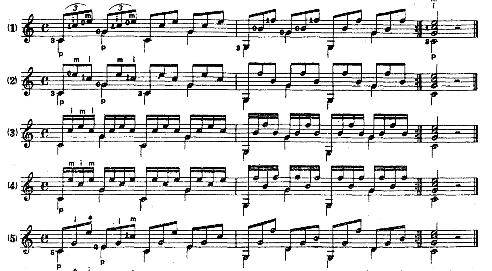

Classical Guitar Lesson Handout
Wei Wang
Created: 2024-02-19 Mon 22:41
Lesson 1
Assessments

How to sit and hold your guitar
How to sit
- Sit on the front half of a chair, use a footstool for left foot
- Be comfortable and relax
- Four points of contact of the body

Left hand
- Your elbow and left arm should never be allowed to be rigid or stiff
- Never bent your wrist too much!
- Hand is C shape
- The thumb of you LH has to be free to move
- Thumb should be across from the index and/or middle fingers
How to look at your left hand
- Learn to trust your left hand in regards to which string you are on.
- Do not look at the entire fretboard and your left hand

Position of the LH finger tips
- Try to “stand” on the fretboard
- Play with finger tips, not pad
- close to fret
Right hand
- Nail shape, take care your nails (We will talk about this more in the future). Start to keep 2-3 mm of nails on your right hand fingers
- Straight wrist, in-line with your forearm
- Relaxed arch
- Use your hand in the way its designed, always grab naturally
- Guitar position need to be correct to support correct RH
Beginning to play
Rest stroke
- Preparation
Completion

Free stroke
- Play free stroke like grab a tennis ball

Hand chart

Exercises (with a metronome)
Exercises on E string


Exercises on The Upper three strings


- Exercise 6

Exercises on The Upper three strings (continued)

Left hand exercise (2 fingers)
- do it at a fret with ease (fret 5)
- finger 1 and finger 2
- finger 2 and finger 3
- finger 3 and finger 4
- finger 1 and finger 3
- finger 2 and finger 4
- finger 1 and finger 4
- watch for
- LH shape
- minimize finger movement(don’t left fingers too high)
Right hand exercise
- Page 18,
- Arpeggios with the thumb and three fingers
Pay attention to left fingering

Chromatic scales at capo 0 position(if you are able to move higher, do it)
- Use metronome!
- Set tempo to 50, slowly increase to 60
- 1/4 notes
- 1/8 notes (later)
- 1/16 notes(later)
C Scales
Arpeggios (broken chords)

Music (if time allows)
Andantino

Waltz

How to practice
- 25 minutes daily
- Prepare for the practice so you are interruption free(go to bathroom, get a glass of water near you, etc)
- Find proper chair and use your footstool
- Practice with a metronome
- Practice SLOW, never practice with a tempo that you can’t not control. Ask yourself
- Am I playing any wrong notes at this tempo?
- Is my Rhythm 100% correct?
- How are my hand position?
- Am I moving my fingers smoothly and freely?
- Am I making full sound?
Lesson 2
Warm up
Chromatic scales
Two fingers spider walk
Arpeggios with the thumb and two fingers (5min)

Music
Spagnoletta (With modification)